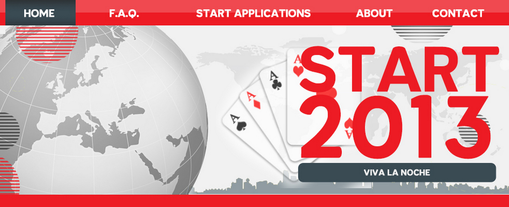

Descriptions for Modals

<div class="row col-lg-10 center-block">
            
                <ul class="nav nav-tabs" role="tablist">
                    <li role="presentation" class="active">
                        <a href="#item1" aria-controls="item1" role="tab" data-toggle="tab" aria-expanded="true">START 2013</a>
                    </li>
                    
                    <li role="presentation">
                        <a href="#item2" aria-controls="item2" role="tab" data-toggle="tab" aria-expanded="false">Snake</a>
                    </li>
                    
                    <li role="presentation">
                        <a href="#item3" aria-controls="item3" role="tab" data-toggle="tab" aria-expanded="false">Blackjack</a>
                    </li>
                    
                    <li role="presentation">
                        <a href="#item4" aria-controls="item4" role="tab" data-toggle="tab" aria-expanded="false">Personal Website</a>
                    </li>
                </ul>
                
                <script>
			         $(function () {
			             $('#myTab a:first').tab('show')
			         })
			     </script>
                    
                <div display="inline" class="tab-content">
                    
                    <div role="tabpanel" class="tab-pane fade active in" id="item1">
                        
                        START 2013 Website <br>
                        Photoshop, Dreamweaver <br>
                        START is a leadership conference held annually to inspire young individuals across Peel to partake in new opportunities. As the Technical Executive for the conference, I designed the START 2013 website using Photoshop and Dreamweaver. The website is accesible <a href="http://www.turnerfenton.com/Students/start/index.html" style="font-size: 14px; color: #000;">here</a>
                    </div>
                    <div role="tabpanel" class="tab-pane fade" id="item2">
                        
                        Snake Java Game <br>
                        Java <br>
                        Talk about how I made it, eclipse, link to downloadable jar</div>
                    <div role="tabpanel" class="tab-pane fade" id="item3">
                        
                        Blackjack Java Game<br>
                        Java <br>
                        Applied the PDLC methodology as well as used Java to design a Blackjack game with a custom user interface and a computer AI. The minimalstic interface was designed completely from stock images using Photoshop to convey a professional frontend design while the computer AI was programmed using a basic RNG seed.</div>
                    <div role="tabpanel" class="tab-pane fade" id="item4">
                        
                        Personal Website <br>
                        HTML, CSS, Javascript <br>
                        As an aspiring full stack web developer, I began learning HTML, CSS and Javascript, employing my knowledge by designing a personal website to showcase my projects and programming skills.</div>
                    
                </div>
                